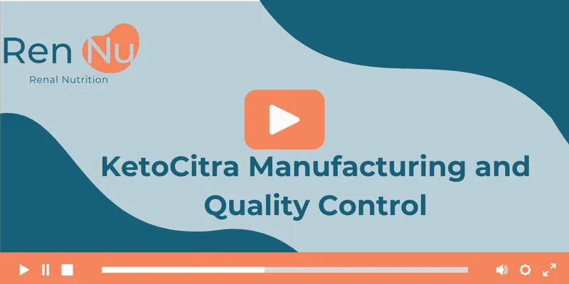

Videos und Webinare
KetoCitra®: Herstellung und Qualitätskontrolle
Was unterscheidet KetoCitra® von Nahrungsergänzungsmitteln? Jacob Kingaard von SBN erklärt, dass es in einer bei der US-amerikanischen FDA registrierten Anlage hergestellt wird – mit strenger Rohstoffauswahl, Qualitätskontrolle und unabhängigen Drittprüfungen jeder Charge, die höchste Sicherheit und Konformität gewährleisten.